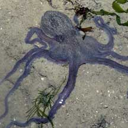
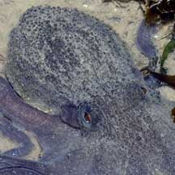
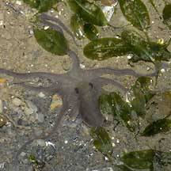
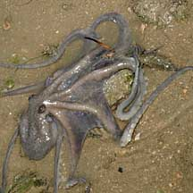
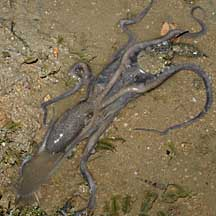
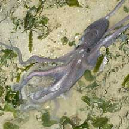
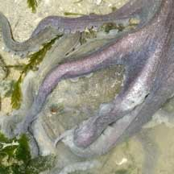
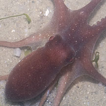

|
|
| cephalopods text index | photo index |
| Phylum Mollusca > Class Cephalopoda > Family Octopodidae |
| Slender
seagrass octopus awaiting identification* Family Octopodidae updated May 2020 Where seen? This small octopus with very long arms is sometimes seen on our Northern shores among seagrasses. Usually purplish. Maroon ones with tiny white spots are sometimes seen. Features: Head about 2-3cm long, arms may be 10-12cm long. Some are hardly bigger than a seagrass blade! The head is tapering, relatively smooth sometimes with tiny bumps. Arms slender tapering, webbing not very extensive. Generally shades of purple. Included in this fact sheet are maroon ones. This octopus hasn't been seen to change the skin texture into large bumps or spines. |
 Changi, Jul 07 |
 |
 Hardly bigger than a seagrass leaf. Changi, Oct 07 |
| What does it eat? One was seen trying to drag a crab into its burrow. |
|
 Changi, May 09  Trying to drag a crab into its lair. |
 Changi, Jul 07  A mating pair? |
 Changi, Aug 13  Maroon one with tiny white spots. |
*Species are difficult to positively identify without close examination.
On this website, they are grouped by external features for convenience of display.
| Slender seagrass octopuses on Singapore shores |
On wildsingapore
flickr
|
| Other sightings on Singapore shores |